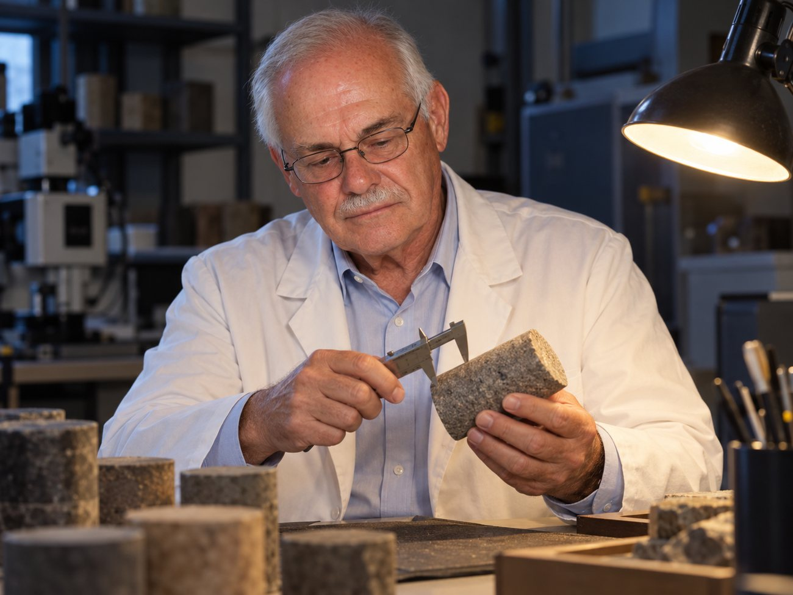
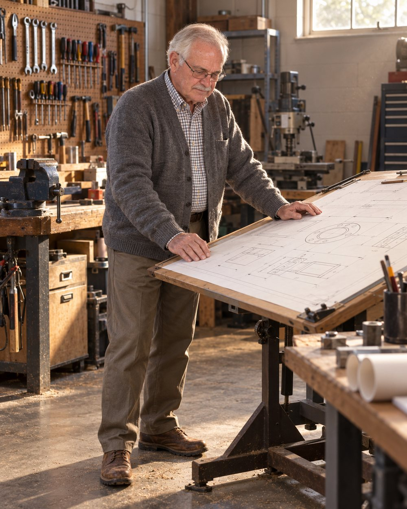
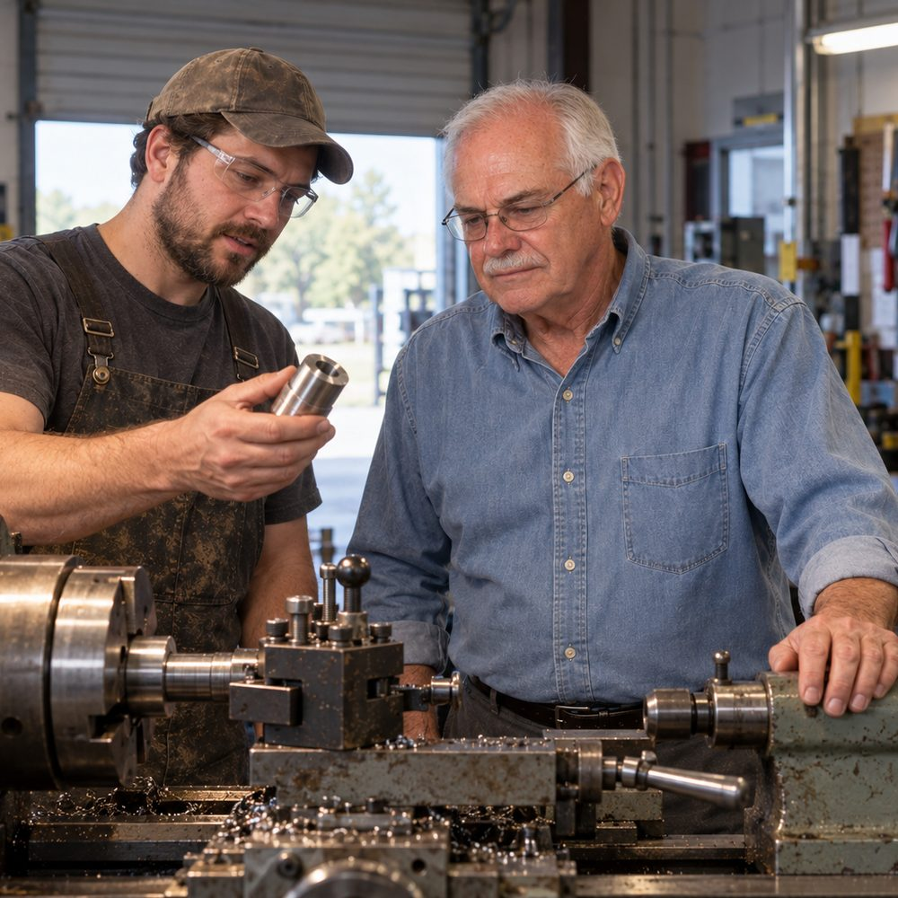
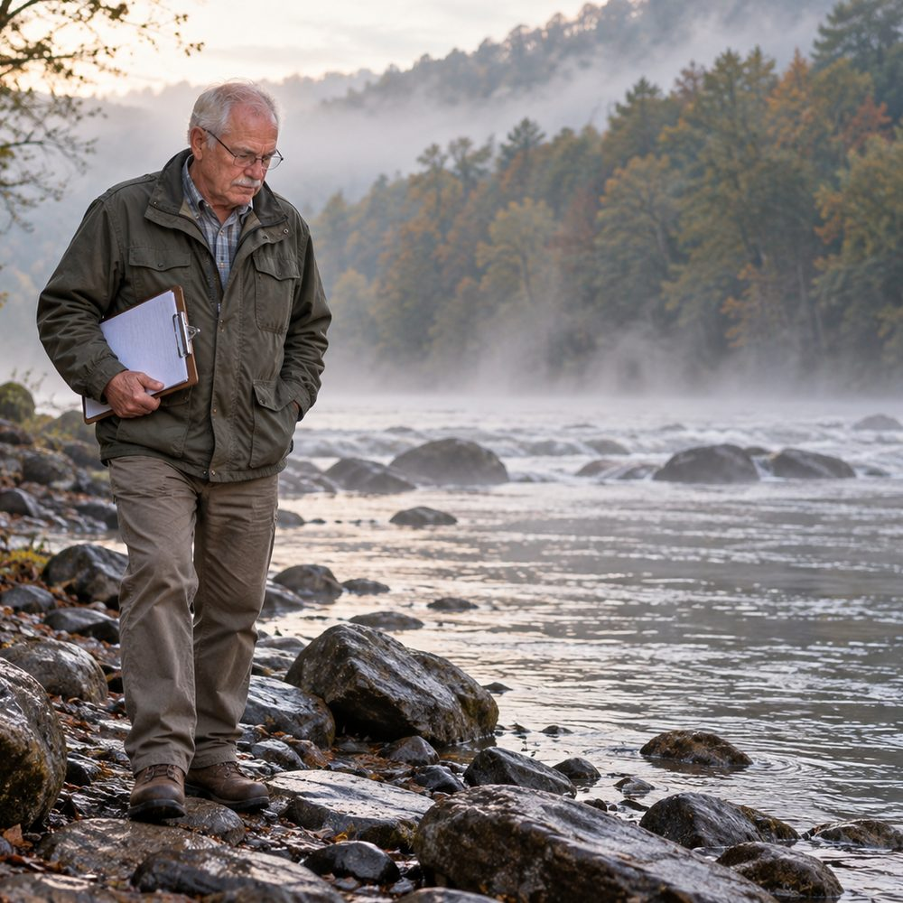
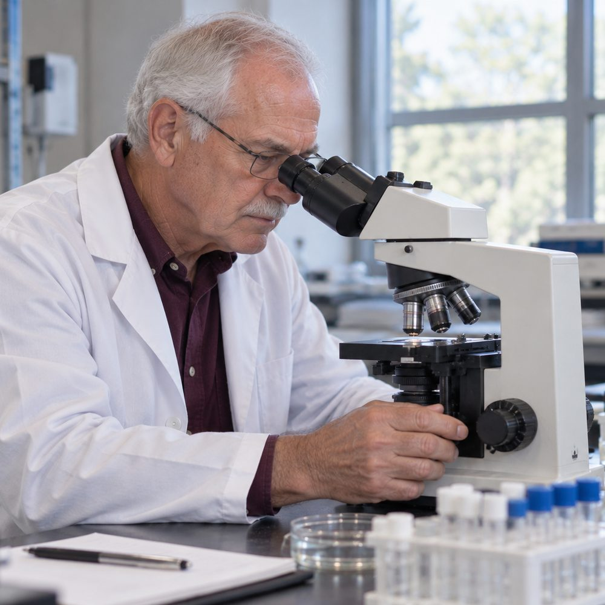

Technology Development Inc. · Morgantown, West Virginia
Morgantown, West Virginia
Sixty years of mechanical engineering, across rock mechanics, hydraulic fracturing and the human gut. Twenty three United States patents, including the first ever awarded through West Virginia University.
Read onMost engineers spend a career inside one discipline. Dr. Shuck holds patents in fluid mechanics, solid mechanics, materials science, geomechanics, instrumentation and the biological sciences, fields that do not usually appear on one person's list. He founded Technology Development Inc. in Morgantown in 1980 and has run it since.
His method is unusual and he is direct about it. Rather than beginning a patent with a literature search, he deliberately ignores the prior art at the start, so that what other people have already tried does not bias or narrow the idea he is chasing. The search comes later.
He holds the first United States patent ever awarded through West Virginia University, and in 1975 the Department of Energy gave him its award for the most patents granted in a single year to any federal employee.
He was born on a West Virginia farm, which is where he says the engineering came from: if something broke, somebody on the place had to work out how to fix it.

1958
1980
23
62
65+
2016
Patent, publication and well counts are as stated by Dr. Shuck. They move as work is filed and published.
Between 2013 and 2018 he was granted five patents covering capsule instruments that travel the length of the gastrointestinal tract and sample it as they go. The numbers are given in full so anyone can look them up.
Granted 23 July 2013
Granted 23 December 2014
Granted 6 January 2015
Granted 22 December 2015
Granted 1 May 2018
Around 2010 he was diagnosed with a gluten sensitivity. He had been losing his memory. On a gluten free diet the memory came back. A mechanical engineer with a habit of taking systems apart then asked the obvious next question, which was what exactly had been happening in there.
That question became five patents. The instruments are capsules a patient swallows, designed to gather data along the whole length of the gut rather than at the two ends of it, where nearly all sampling had been done before.
His hypothesis, stated as a hypothesis. He argues the brain and the gastrointestinal tract are in constant intensive communication, that between them they are the two most complex systems to model on Earth, and that the roles the microbiome plays in symptoms and disease are still largely uncharacterised. He puts this forward as a research direction, not as a finding, and makes no clinical claim.

He was among the first to work out what actually happens in rock during hydraulic fracturing. He hypothesised that fractures grow in discrete jumps in sandstone, limestone and shale, then proved it experimentally in his own laboratory. He was first to analyse the three dimensional stress distribution in the earth's crust during fracturing, and first to show that the stress field could be re-oriented enough to steer where new fractures go.
Through Technology Development Inc. he drilled and completed more than sixty five gas wells. Some are still producing.
He argues that current fracturing practice in the Marcellus and Utica shales recovers roughly twenty percent of the gas in place, where sixty percent or better should be achievable, and that the difference is an engineering problem rather than a geological limit.
This is Dr. Shuck's own published engineering position. It is his argument, not a settled industry figure.
Morgantown, West Virginia. Founder and president of The WMAC Foundation since 1997.
West Virginia University
West Virginia University
United States Department of Energy. Held a security clearance through that period.
West Virginia University
West Virginia Institute of Technology
West Virginia Armature Co. The first job.
Registered Professional Engineer and licensed surveyor in West Virginia and Ohio, certified by the National Council of Engineering Examiners.

In the machine shop
An Appalachian river at dawn
At the microscopeEvery picture of Dr. Shuck on this page is an AI-generated illustration, produced with his approval from a reference photograph. They are not photographs of real events, wells, laboratories or meetings.
United States Department of Energy.
American Society of Mechanical Engineers.
American Society for Testing and Materials.
Named in his honour at West Virginia University. Admitted Alum Emeritus by WVU in 2022.
National Science Foundation Science Faculty Fellowship to West Virginia University, a second NSF fellowship to Iowa State University, and four Ford Foundation fellowships for summer programmes at the Massachusetts Institute of Technology and Wayne State University.
Enquiries about the patents, licensing, the gut research or the oil and gas work.
Technology Development Inc.
Morgantown, West Virginia